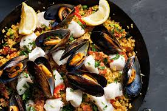
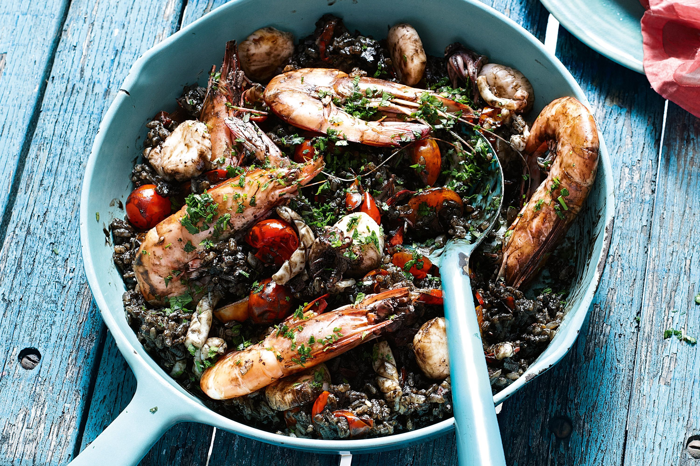

𝐏𝐚𝐞𝐥𝐥𝐚
𝐀 𝐩𝐚𝐞𝐥𝐥𝐚 𝐞𝐠𝐲 𝐢𝐳𝐥𝐞𝐭𝐞𝐬 𝐬𝐩𝐚𝐧𝐲𝐨𝐥 𝐫𝐢𝐳𝐬𝐟𝐨𝐳𝐞𝐥𝐞𝐤, 𝐚𝐦𝐞𝐥𝐲𝐞𝐭 𝐭𝐢𝐩𝐢𝐤𝐮𝐬𝐚𝐧 𝐭𝐞𝐧𝐠𝐞𝐫𝐢 𝐡𝐞𝐫𝐤𝐞𝐧𝐭𝐲𝐮𝐢𝐯𝐚𝐥, 𝐡𝐮𝐬𝐨𝐤𝐤𝐚𝐥 𝐞𝐬 𝐳𝐨𝐥𝐝𝐬𝐞𝐠𝐞𝐤𝐤𝐞𝐥 𝐤𝐞𝐬𝐳𝐢𝐭𝐞𝐧𝐞𝐤.
𝐇𝐨𝐳𝐳𝐚𝐯𝐚𝐥𝐨𝐤:
- ❝𝐑𝐢𝐳𝐬❞
- ❝𝐇𝐮𝐬❞
- ❝𝐙𝐨𝐥𝐝𝐬𝐞𝐠𝐞𝐤❞
- ❝𝐅𝐮𝐬𝐳𝐞𝐫𝐞𝐤❞
- ❝𝐎𝐥𝐢𝐯𝐚𝐨𝐥𝐚𝐣❞
- ❝𝐅𝐨𝐤𝐡𝐚𝐠𝐲𝐦𝐚❞
- ❝𝐂𝐢𝐭𝐫𝐨𝐦❞
𝐊𝐮𝐥𝐨𝐧𝐥𝐞𝐠𝐞𝐬 𝐢𝐳𝐞𝐤:
❝𝐒𝐞𝐚𝐟𝐨𝐨𝐝 𝐏𝐚𝐞𝐥𝐥𝐚❞
𝐀 𝐬𝐞𝐚𝐟𝐨𝐨𝐝 𝐩𝐚𝐞𝐥𝐥𝐚 𝐞𝐠𝐲 𝐢𝐳𝐥𝐞𝐭𝐞𝐬 𝐬𝐩𝐚𝐧𝐲𝐨𝐥 𝐫𝐢𝐳𝐬𝐟𝐨𝐳𝐞𝐥𝐞𝐤, 𝐚𝐦𝐞𝐥𝐲 𝐟𝐫𝐢𝐬𝐬 𝐭𝐞𝐧𝐠𝐞𝐫𝐢 𝐡𝐞𝐫𝐤𝐞𝐧𝐭𝐲𝐮𝐯𝐚𝐥 𝐤𝐞𝐬𝐳𝐮𝐥. 𝐆𝐚𝐳𝐝𝐚𝐠 𝐢𝐳𝐞 𝐢𝐠𝐚𝐳𝐢 𝐭𝐞𝐧𝐠𝐞𝐫𝐩𝐚𝐫𝐭𝐢 𝐞𝐥𝐦𝐞𝐧𝐲𝐭 𝐧𝐲𝐮𝐣𝐭.
❝𝐁𝐥𝐚𝐜𝐤 𝐑𝐢𝐜𝐞 𝐏𝐚𝐞𝐥𝐥𝐚❞
𝐀 𝐛𝐥𝐚𝐜𝐤 𝐫𝐢𝐜𝐞 𝐩𝐚𝐞𝐥𝐥𝐚 𝐞𝐠𝐲 𝐤𝐮𝐥𝐨𝐧𝐥𝐞𝐠𝐞𝐬 𝐬𝐩𝐚𝐧𝐲𝐨𝐥 𝐫𝐢𝐳𝐬𝐞𝐭𝐞𝐥, 𝐚𝐦𝐞𝐥𝐲 𝐟𝐞𝐤𝐞𝐭𝐞 𝐭𝐢𝐧𝐭𝐚𝐡𝐚𝐥 𝐢𝐧𝐤𝐛𝐞𝐧 𝐤𝐞𝐬𝐳𝐮𝐥. 𝐆𝐚𝐳𝐝𝐚𝐠 𝐢𝐳𝐞 𝐞𝐬 𝐥𝐞𝐧𝐲𝐮𝐠𝐨𝐳𝐨 𝐬𝐳𝐢𝐧𝐞 𝐞𝐠𝐲𝐞𝐝𝐢 𝐞𝐥𝐦𝐞𝐧𝐲𝐭 𝐧𝐲𝐮𝐣𝐭.
❝𝐋𝐨𝐛𝐬𝐭𝐞𝐫 𝐏𝐚𝐞𝐥𝐥𝐚❞

𝐀 𝐥𝐨𝐛𝐬𝐭𝐞𝐫 𝐩𝐚𝐞𝐥𝐥𝐚 𝐞𝐠𝐲 𝐠𝐚𝐳𝐝𝐚𝐠 𝐬𝐩𝐚𝐧𝐲𝐨𝐥 𝐫𝐢𝐳𝐬𝐟𝐨𝐳𝐞𝐥𝐞𝐤, 𝐚𝐡𝐨𝐥 𝐚 𝐟𝐫𝐢𝐬𝐬 𝐡𝐨𝐦𝐚𝐫 𝐞𝐬 𝐚 𝐳𝐨𝐥𝐝𝐬𝐞𝐠𝐞𝐤 𝐟𝐮𝐳𝐢𝐨𝐬𝐚𝐧 𝐞𝐠𝐲𝐞𝐬𝐮𝐥𝐧𝐞𝐤. 𝐀 𝐬𝐳𝐚𝐟𝐭𝐨𝐬 𝐢𝐳𝐞𝐤 𝐢𝐠𝐚𝐳𝐢 𝐭𝐞𝐧𝐠𝐞𝐫𝐩𝐚𝐫𝐭𝐢 𝐞𝐥𝐦𝐞𝐧𝐲𝐭 𝐧𝐲𝐮𝐣𝐭𝐚𝐧𝐚𝐤.
𝐄𝐥𝐤𝐞𝐬𝐳𝐢𝐭𝐞𝐬:
𝐀 𝐩𝐚𝐞𝐥𝐥𝐚 𝐞𝐥𝐤𝐞𝐬𝐳𝐢𝐭𝐞𝐬𝐞 𝐚 𝐤𝐨𝐯𝐞𝐭𝐤𝐞𝐳𝐨𝐤𝐞𝐩𝐩𝐞𝐧 𝐭𝐨𝐫𝐭𝐞𝐧𝐢𝐤: 𝐄𝐥𝐨𝐬𝐳𝐨𝐫 𝐯𝐚𝐠𝐝 𝐟𝐞𝐥 𝐚 𝐡𝐮𝐬𝐨𝐭 (𝐜𝐬𝐢𝐫𝐤𝐞, 𝐧𝐲𝐮𝐥) 𝐞𝐬 𝐚 𝐳𝐨𝐥𝐝𝐬𝐞𝐠𝐞𝐤𝐞𝐭 (𝐩𝐚𝐩𝐫𝐢𝐤𝐚, 𝐩𝐚𝐫𝐚𝐝𝐢𝐜𝐬𝐨𝐦). 𝐄𝐠𝐲 𝐧𝐚𝐠𝐲, 𝐥𝐚𝐩𝐨𝐬 𝐬𝐞𝐫𝐩𝐞𝐧𝐲𝐨𝐛𝐞𝐧 𝐡𝐞𝐯𝐢𝐭𝐬 𝐨𝐥𝐢𝐯𝐚𝐚𝐭 𝐤𝐨𝐳𝐞𝐩𝐞𝐬 𝐥𝐚𝐧𝐠𝐨𝐧, 𝐦𝐚𝐣𝐝 𝐭𝐞𝐝𝐝 𝐛𝐞𝐥𝐞 𝐚 𝐡𝐮𝐬𝐨𝐭, 𝐞𝐬 𝐩𝐢𝐫𝐢𝐭𝐬𝐝 𝐚𝐫𝐚𝐧𝐲𝐛𝐚𝐫𝐧𝐚𝐫𝐚. 𝐄𝐳𝐮𝐭𝐚𝐧 𝐯𝐞𝐝𝐝 𝐤𝐢 𝐚 𝐡𝐮𝐬𝐨𝐭, 𝐞𝐬 𝐭𝐞𝐝𝐝 𝐟𝐞𝐥𝐫𝐞. 𝐀 𝐬𝐞𝐫𝐩𝐞𝐧𝐲𝐨𝐛𝐞𝐧 𝐚𝐝𝐝 𝐡𝐨𝐳𝐳𝐚 𝐚 𝐟𝐞𝐥𝐯𝐚𝐠𝐨𝐭𝐭 𝐳𝐨𝐥𝐝𝐬𝐞𝐠𝐞𝐤𝐞𝐭, 𝐞𝐬 𝐩𝐢𝐫𝐢𝐭𝐬𝐝 𝐨𝐤𝐞𝐭 𝐩𝐚𝐫 𝐩𝐞𝐫𝐜𝐢𝐠. 𝐄𝐳𝐮𝐭𝐚𝐧 𝐭𝐞𝐝𝐝 𝐯𝐢𝐬𝐬𝐳𝐚 𝐚 𝐡𝐮𝐬𝐨𝐭, 𝐚𝐝𝐝 𝐡𝐨𝐳𝐳𝐚 𝐚 𝐫𝐢𝐳𝐬𝐭, 𝐚 𝐟𝐮𝐬𝐳𝐞𝐫𝐞𝐤𝐞𝐭 (𝐬𝐚𝐟𝐟𝐫𝐨𝐧𝐭, 𝐟𝐞𝐤𝐞𝐭𝐞𝐛𝐨𝐫𝐬𝐭), 𝐞𝐬 𝐨𝐧𝐭𝐬𝐞 𝐟𝐞𝐥 𝐡𝐮𝐬𝐥𝐞𝐯𝐞𝐬𝐬𝐞𝐥 𝐯𝐚𝐠𝐲 𝐯𝐢𝐳𝐳𝐞𝐥. 𝐇𝐨𝐳𝐝 𝐟𝐞𝐥𝐟𝐨𝐫𝐫𝐧𝐢, 𝐦𝐚𝐣𝐝 𝐜𝐬𝐨𝐤𝐤𝐞𝐧𝐭𝐬𝐝 𝐚 𝐡𝐨𝐭, 𝐞𝐬 𝐟𝐨𝐳𝐝 𝐥𝐞𝐟𝐞𝐝𝐯𝐞 𝐤𝐨𝐫𝐮𝐥𝐛𝐞𝐥𝐮𝐥 𝟐𝟎-𝟐𝟓 𝐩𝐞𝐫𝐜𝐢𝐠, 𝐚𝐦í𝐠 𝐚 𝐫𝐢𝐳𝐬 𝐦𝐞𝐠𝐩𝐮𝐡𝐮𝐥 𝐞𝐬 𝐚 𝐟𝐨𝐥𝐲𝐚𝐝𝐞𝐤 𝐟𝐞𝐥𝐬𝐳𝐢𝐯𝐨𝐝𝐢𝐤. 𝐇𝐚 𝐭𝐞𝐧𝐠𝐞𝐫𝐢 𝐡𝐞𝐫𝐤𝐞𝐧𝐭𝐲𝐮𝐭 𝐢𝐬 𝐡𝐚𝐬𝐳𝐧𝐚𝐥𝐬𝐳, 𝐚 𝐟𝐨𝐳𝐞𝐬 𝐮𝐭𝐨𝐥𝐬𝐨 𝟏𝟎 𝐩𝐞𝐫𝐜é𝐛𝐞𝐧 𝐚𝐝𝐝 𝐡𝐨𝐳𝐳𝐚 𝐨𝐤𝐞𝐭. 𝐓𝐚𝐥𝐚𝐫𝐚𝐬 𝐞𝐥𝐨𝐭𝐭 𝐡𝐚𝐠𝐲𝐝 𝐩𝐢𝐡𝐞𝐧𝐧𝐢 𝐩𝐚𝐫 𝐩𝐞𝐫𝐜𝐢𝐠, 𝐦𝐚𝐣𝐝 𝐜𝐢𝐭𝐫𝐨𝐦𝐬𝐳𝐞𝐥𝐞𝐭𝐞𝐤𝐤𝐞𝐥 𝐝𝐢𝐬𝐳𝐢𝐭𝐯𝐞 𝐤𝐢𝐧𝐚𝐥𝐝.